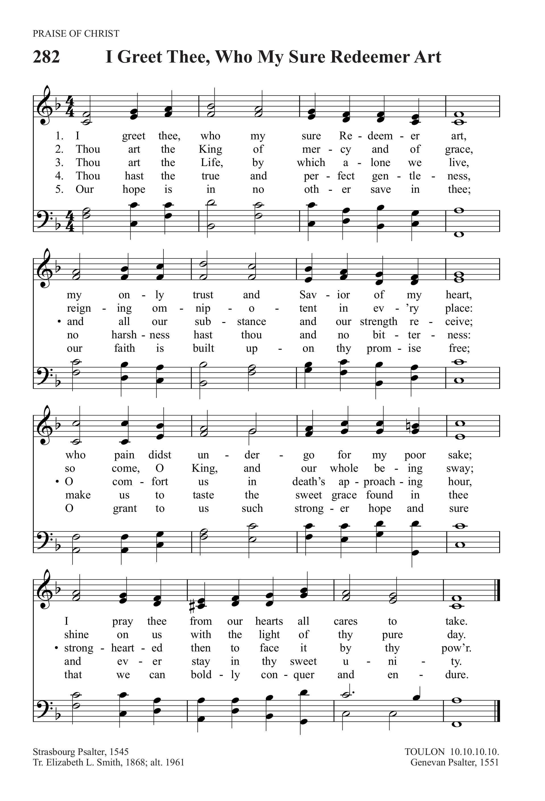
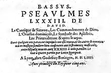

|
|
568公義、權能正進行 |
The Voice of God
The voice of God goes out through all the world:
God's glory speaks across the universe. The great King's herald cries from star to star: With pow'r, with justice, Christ will be the way. The Lord has said: "Receive my messenger, My promise to the world, my pledge made flesh, A lamp to ev'ry nation, light from light: With pow'r, with justice, Christ will be the way. The broken reed he will not trample down, Nor set his heel upon the dying flame, He binds the wounds, and health is in his hand: With pow'r, with justice, Christ will be the way. Anointed with the Spirit and with power, He comes to crown with comfort all the weak, To show the face of justice to the poor: With pow'r, with justice, Christ will be the way. His touch will bless the eyes that darkness held, The lame shall run, the halting tongue shall sing, And pris'ners laugh in light and liberty: With pow'r, with justice, Christ will be the way. Text: Luke Connaughton Tune: Woodlands; Walter Greatorex
|
|
|
 |
|
|
|
|

568公義、權能正進行 -
The Voice of God Goes Out' from the Common Praise (1998) hymnal of the
Anglican Church of Canada. Words: Luke Connaughton (1919-1979) Music: Cyril
Vincent Taylor (1907-1991)
https://www.youtube.com/watch?v=eH0mFvue5Q4
-
The voice of God goes out through all the world
https://youtu.be/QyIkOmt6kHc
| Text: | The Voice of God Goes Out through All the World |
| Author: | Luke Connaughton, 1919-1979 |
| Tune: | TOULON |
| Harmonizer: | Louis Bourgeois, c. 1510-1561 |
| Short Name: | Luke Connaughton |
| Full Name: | Connaughton, Luke, 1919-1979 |
| Birth Year: | 1919 |
| Death Year: | 1979 |
Used Pseudonyms Peter Icarus and J. Smith.
| Text Information | |
|---|---|
| First Line: | The voice of God goes out through all the world |
| Title: | The Voice of God Goes Out through All the World |
| Author: | Luke Connaughton, 1919-1979 |
| Meter: | 10 10 10 10 |
| Language: | English |
| Publication Date: | 1986 |
| Scripture: | ; ; ; ; |
| Topic: | Advent 3, Year B; Ordinary Time 3, Year C; Advent (10 more...) |
| Copyright: | © 1970, Mayher McCrimmon Ltd. |
Tune Information
| Title: | TOULON |
| Composer: | Louis Bourgeois (1551) |
| Meter: | 10.10.10.10 |
| Incipit: | 12343 21171 34565 |
| Key: | F Major |
| Source: | Genevan Psalter, 1551; adapt from GENEVAN 124 |
| Copyright: | Public Domain |
| Short Name: | Louis Bourgeois |
| Full Name: | Bourgeois, Louis, 1510-1561 |
| Birth Year: | 1510 |
| Death Year: | 1561 |
Louis Bourgeois (b. Paris, France, c. 1510; d. Paris, 1561). In both his early and later years Bourgeois wrote French songs to entertain the rich, but in the history of church music he is known especially for his contribution to the Genevan Psalter. Apparently moving to Geneva in 1541, the same year John Calvin returned to Geneva from Strasbourg, Bourgeois served as cantor and master of the choristers at both St. Pierre and St. Gervais, which is to say he was music director there under the pastoral leadership of Calvin. Bourgeois used the choristers to teach the new psalm tunes to the congregation.
The extent of Bourgeois's involvement in the Genevan Psalter is a matter of scholarly debate. Calvin had published several partial psalters, including one in Strasbourg in 1539 and another in Geneva in 1542, with melodies by unknown composers. In 1551 another French psalter appeared in Geneva, Eighty-three Psalms of David, with texts by Marot and de Beze, and with most of the melodies by Bourgeois, who supplied thirty four original tunes and thirty-six revisions of older tunes. This edition was republished repeatedly, and later Bourgeois's tunes were incorporated into the complete Genevan Psalter (1562). However, his revision of some older tunes was not uniformly appreciated by those who were familiar with the original versions; he was actually imprisoned overnight for some of his musical arrangements but freed after Calvin's intervention. In addition to his contribution to the 1551 Psalter, Bourgeois produced a four-part harmonization of fifty psalms, published in Lyons (1547, enlarged 1554), and wrote a textbook on singing and sight-reading, La Droit Chemin de Musique (1550). He left Geneva in 1552 and lived in Lyons and Paris for the remainder of his life.
Bert Polman

https://en.wikipedia.org/wiki/Louis_Bourgeois_(composer)